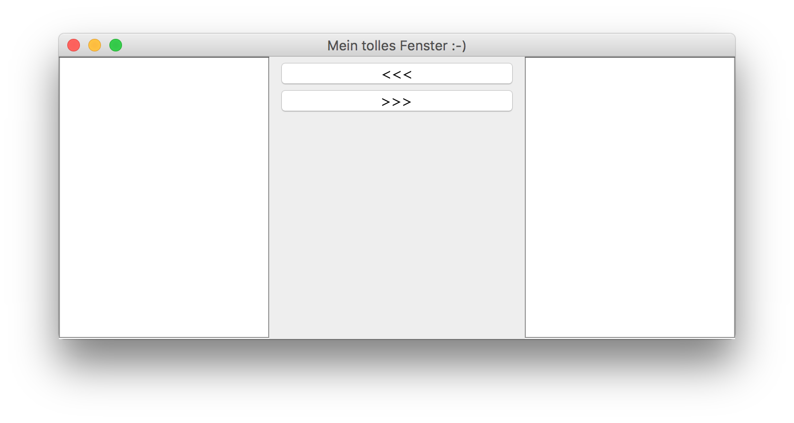

Welcome to FTOOP Java Examples¶
Contents:
1. Patterns¶
1.1. Erbauer (Builder)¶
- Ebenfalls eine «Konfigurationsmethode»
- Unterschied zu
`Fabrikmethode`: Es wird eine Instanz des Builders (innere statische Klasse von Produkt) erstellt, die durch gekettete Aufrufe von Konfigurationsmethoden konfiguriert werden kann. - Dem Produkt wird anschliessend die Instanz des Builders als Konfiguration übergeben.
1.1.1. Beispiel¶
package patterns.erzeugungsmuster.erbauer;
/**
* Vehicle Class (Construction Pattern)
*/
public class Vehicle {
private String type, color;
private int nWheels;
private boolean hasMotor;
private float maxSpeed;
/**
* Called by the Builder
*/
private Vehicle(VehicleBuilder options) {
// Do something...
}
/**
* Vehicle Builder
*/
public static final class VehicleBuilder {
private int nWheels = 2;
private int nDoors = 2;
public VehicleBuilder twoWheeler() {
this.nWheels = 2;
return this;
}
public VehicleBuilder fourWheeler() {
this.nWheels = 4;
return this;
}
public VehicleBuilder numDoors(int nDoors) {
this.nDoors = nDoors;
return this;
}
public Vehicle create() {
return new Vehicle(this);
}
}
}
package patterns.erzeugungsmuster.erbauer;
/**
* Created by samuelblattner on 20/09/16.
*/
public class Main {
public static void main(String args[]) {
Vehicle myCar = new Vehicle.VehicleBuilder().fourWheeler().numDoors(5).create();
}
}
1.2. Erzeugungsmethode¶
- Analog zu Bestellung in Restaurant
- Statische Produktionsmethode damit komplizierter Konstruktor nicht von aussen aufgerufen werden muss.
- Nur private Konstruktoren!
1.2.1. Beispiel¶
package patterns.erzeugungsmuster.erzeugungsmethode;
/**
* Vehicle Class (Construction Pattern)
*/
public class Vehicle {
private String type, color;
private int nWheels;
private boolean hasMotor;
private float maxSpeed;
/**
* This constructor is too complicated for mortals, wrap it in two literal and easy constructors
*/
private Vehicle (String type, String color, int nWheels, boolean hasMotor, float maxSpeed) {
// Do something...
}
/**
* Now, this is much easier
*/
public static Vehicle createCar(String color) {
return new Vehicle("Car", color, 4, true, 200.0f);
}
/**
* And this, too
*/
public static Vehicle createBike(String color) {
return new Vehicle("Bike", color, 2, false, 60.0f);
}
}
1.3. Fabrikmethode (Factory)¶
- Ebenfalls eine «Konfigurationsmethode»
- Unterschied zu
`Erzeugungsmethode`: Den Job der Konstruktion übernimmt eine separate Fabrik-Klasse - Produkte müssen entweder gemeinsames Interface implementieren, gemeinsame abstrakte Klasse erben oder beides!
1.3.1. Beispiel¶
package patterns.erzeugungsmuster.fabrikmethode;
/**
* Interface Vehicle
*/
public interface Vehicle {
public int getNumWheels();
public void setSpeed(float speed);
}
package patterns.erzeugungsmuster.fabrikmethode;
/**
* Vehicle Factory
*/
public class VehicleFactory {
private enum VEHICLE_TYPE {
CAR,
BIKE,
}
/**
* This is the Factory method
*/
public static Vehicle createVehicle(final VEHICLE_TYPE type, final String name) {
switch (type) {
case CAR:
return new Car("My cool car");
case BIKE:
return new Bike("My cool bike");
}
throw new IllegalStateException(
String.format("Unexpected Vehicle type %s", type)
);
}
}
1.4. Singleton¶
- Max. 1 Instanz soll existieren
- Z.B. zentrale Registrierung oder Ressourcen-Handler
- Privater Konstruktor
1.4.1. Beispiel¶
package patterns.erzeugungsmuster.singleton;
/**
* Non-Lazy Singleton
*/
public final class Singleton {
private static final Singleton INSTANCE = new Singleton();
public static Singleton getInstance() {
return INSTANCE;
}
private Singleton() {
};
}
2. Threading¶
2.1. Alternator¶
- Threads mit alternierender Ausführung
- Alternierung über ein zentrales Lock-Objekt geregelt (boolean[])
2.1.1. Beispiel¶
package threading.alternator;
/**
* Alternator example
*/
public class Alternator implements Runnable {
// This will be a reference to an external lock
private boolean[] chosen_alternator_lock;
// This alternator's ID (true or false)
private boolean alternatorID;
// This alternator's name
private String name;
/**
* Constructor
*/
private Alternator(String name, boolean alternatorID, boolean[] chosen_alternator_lock) {
this.name = name;
this.alternatorID = alternatorID;
this.chosen_alternator_lock = chosen_alternator_lock;
}
/**
* Here's the actual work done
*/
private void printMessage() {
// Check if this alternator can enter the critical zone
synchronized (chosen_alternator_lock) {
// Check if it's this alternator's turn, otherwise wait and give way
// for the other alternator.
try {
while (chosen_alternator_lock[0] != alternatorID) {
this.chosen_alternator_lock.wait();
}
} catch (InterruptedException e) {
}
System.out.println(String.format("Hello from Alternator ID %s", name));
chosen_alternator_lock[0] = !alternatorID;
chosen_alternator_lock.notifyAll();
}
}
/**
* Keep run method as small as possible
*/
@Override
public void run() {
for (int i = 0; i < 100; i++) {
printMessage();
}
}
public static void main(String args[]) {
boolean[] chosen_alternator_lock = new boolean[1];
chosen_alternator_lock[0] = true;
Thread alternator1 = new Thread(new Alternator("First Alternator", true, chosen_alternator_lock));
Thread alternator2 = new Thread(new Alternator("Second Alternator", false, chosen_alternator_lock));
alternator1.start();
alternator2.start();
}
}
2.2. Queued Consumer Producer¶
2.2.1. Beispiel¶
package threading.consumer_producer;
/**
* Created by samuelblattner on 24/09/16.
*/
public class Queue {
private Integer[] queue;
private int stackPointer = 0;
private int dequeuePointer = 0;
public Queue(int size) {
this.queue = new Integer[size];
for (int i=0; i<queue.length; i++) {
queue[i] = null;
}
}
public synchronized boolean enqueue(Integer newElement) throws InterruptedException {
while(queue[stackPointer] != null) {
System.out.println("---> QUEUE: Enqueuing suspended!");
this.wait();
}
queue[stackPointer] = newElement;
stackPointer++;
if (stackPointer >= queue.length) {
stackPointer = 0;
}
this.notifyAll();
return true;
}
public synchronized Integer dequeue() throws InterruptedException {
while (queue[dequeuePointer] == null) {
System.out.println("---> QUEUE: Dequeuing suspended!");
this.wait();
}
Integer returnElement = queue[dequeuePointer];
queue[dequeuePointer] = null;
dequeuePointer++;
if (dequeuePointer >= queue.length) {
dequeuePointer = 0;
}
this.notifyAll();
return returnElement;
}
}
package threading.consumer_producer;
import java.util.Random;
/**
* Created by samuelblattner on 21/09/16.
*/
public class Producer implements Runnable {
private Queue queue;
private Random randomizer;
public Producer(Queue queue) {
this.queue = queue;
randomizer = new Random();
}
@Override
public void run() {
while(true) {
try {
Thread.sleep(2000);
int rndNumber = randomizer.nextInt();
queue.enqueue(rndNumber);
System.out.format("PRODUCER: Produced %d\n", rndNumber);
} catch(InterruptedException ex) {
Thread.currentThread().interrupt();
break;
}
}
}
}
package threading.consumer_producer;
/**
* Created by samuelblattner on 21/09/16.
*/
public class Consumer implements Runnable {
private Queue queue;
public Consumer(Queue queue) {
this.queue = queue;
}
@Override
public void run() {
while(true) {
try {
Thread.sleep(4000);
Integer dequeuedNumber = queue.dequeue();
System.out.println(String.format("CONSUMER: Read number %d", dequeuedNumber));
} catch (InterruptedException ex) {
Thread.currentThread().interrupt();
break;
}
}
}
}
package threading.consumer_producer;
/**
* Created by samuelblattner on 24/09/16.
*/
public class Runner {
public static void main(String args[]) {
Queue queue = new Queue(2);
Thread producer = new Thread(new Producer(queue));
Thread consumer = new Thread(new Consumer(queue));
producer.start();
consumer.start();
}
}
3. Advanced Techniques¶
3.1. Annotations¶
3.2. Reflection¶
Die Reflection-API bildet ein Modell der Java-Sprache. Die Reflection-API beschreibt mittels Klassen wie Method, Constructor, Class, Field, etc. die Elemente von Java. Mit Reflection kann die Struktur unbekannter Objekte und Klassen zur Laufzeit analysiert werden. Ausserdem können damit Methoden und Konstruktoren aufgerufen und Felder gesetzt werden.
Class-Objekte erhält man über
- anyObject.getClass()
- AnyClass.class
- Class.forName(“fully.qualified.Name”)
3.2.1. Vorteile¶
- Von der Klasse, die Reflection benutzt, gibt es nie eine direkte (binäre) Abhängigkeit auf die mit Reflection verwendeten Klassen. Sie kann deshalb unabhängig vom Vorhandensein der benutzten Klasse geladen und ausgeführt werden.
- Die mit Reflection aufgerufenen Klassen müssen z.B. keinen bestimmten Typ haben, sondern nur Methoden mit einer bestimmten Signatur anbieten.
- Verwendung von Annotations
- Generische / konfigurierbare Ausführung von Programmen wird möglich.
3.2.2. Nachteile¶
- Die Reflection-API arbeitet mit Strings. Dadurch entsteht nur eine implizite Abhängigkeit / Kopplung zu den benutzen Klassen. Bei einer Veränderung der API der benutzten Klassen kann diese (vom Compiler unbemerkt) gebrochen werden.
3.2.3. Beispiel Allgemein¶
package advanced_techniques.reflection;
/**
* Reflection Example: Dummy Class to be loaded and instantiated dynamically
*/
public class DummyClass {
private static final int myVar = 0;
public void sayHello(String yourName) {
System.out.format("Hello World, hello %s\n", yourName);
}
}
package advanced_techniques.reflection;
import java.lang.reflect.Field;
import java.lang.reflect.InvocationTargetException;
import java.lang.reflect.Method;
import java.lang.reflect.Modifier;
/**
* Reflection example
*/
public class Reflection {
private Class<?> myClass;
private static final String helloMethodName = "sayHello";
public Reflection(String className) {
try {
// Get Class by String
myClass = Class.forName(className);
// Get Method by String
Method helloMethod = myClass.getMethod(helloMethodName, String.class);
// Create an instance
Object instance = myClass.newInstance();
// Invoke method
helloMethod.invoke(instance, "Samuel");
// Get Field and Method list
Method[] methods = myClass.getDeclaredMethods();
String methodsString = "";
for(Method method : methods) {
methodsString +=
String.format(
"%s %s(%s)",
Modifier.toString(method.getModifiers()),
method.getName(),
method.getParameterTypes()
);
}
Field[] fields = myClass.getDeclaredFields();
String fieldStrings = "";
for(Field field : fields) {
fieldStrings +=
String.format(
"%s %s %s",
Modifier.toString(field.getModifiers()),
field.getType(),
field.getName()
);
}
System.out.format(
"\n\nCalled by class %s with \n\nMethods:\n%s\n\nFields:\n%s",
className,
methodsString,
fieldStrings
);
} catch (ClassNotFoundException ex) {
System.out.format("Class %s could not be found.", className);
} catch (NoSuchMethodException ex) {
System.out.format("Method %s could not be found.", helloMethodName);
} catch (IllegalAccessException ex) {
System.out.format("Illegal Access");
} catch (InstantiationException ex) {
System.out.format("Error when instantiating class %s", className);
} catch (InvocationTargetException ex) {
System.out.format("Error when calling method %s", helloMethodName);
}
}
public static void main (String args[]) {
// Use Fully Qualified Module Name!
new Reflection("advanced_techniques.reflection.DummyClass");
}
}
3.2.4. Beispiel Aufgabe Interface Creator¶
package advanced_techniques.reflection;
/**
* Reflection Example: Dummy Class to be loaded and instantiated dynamically
*/
public class DummyClass {
private static final int myVar = 0;
public void sayHello(String yourName) {
System.out.format("Hello World, hello %s\n", yourName);
}
}
| language: | java |
|---|
package advanced_techniques.reflection;
import java.lang.reflect.Field;
import java.lang.reflect.InvocationTargetException;
import java.lang.reflect.Method;
import java.lang.reflect.Modifier;
/**
* Reflection example
*/
public class Reflection {
private Class<?> myClass;
private static final String helloMethodName = "sayHello";
public Reflection(String className) {
try {
// Get Class by String
myClass = Class.forName(className);
// Get Method by String
Method helloMethod = myClass.getMethod(helloMethodName, String.class);
// Create an instance
Object instance = myClass.newInstance();
// Invoke method
helloMethod.invoke(instance, "Samuel");
// Get Field and Method list
Method[] methods = myClass.getDeclaredMethods();
String methodsString = "";
for(Method method : methods) {
methodsString +=
String.format(
"%s %s(%s)",
Modifier.toString(method.getModifiers()),
method.getName(),
method.getParameterTypes()
);
}
Field[] fields = myClass.getDeclaredFields();
String fieldStrings = "";
for(Field field : fields) {
fieldStrings +=
String.format(
"%s %s %s",
Modifier.toString(field.getModifiers()),
field.getType(),
field.getName()
);
}
System.out.format(
"\n\nCalled by class %s with \n\nMethods:\n%s\n\nFields:\n%s",
className,
methodsString,
fieldStrings
);
} catch (ClassNotFoundException ex) {
System.out.format("Class %s could not be found.", className);
} catch (NoSuchMethodException ex) {
System.out.format("Method %s could not be found.", helloMethodName);
} catch (IllegalAccessException ex) {
System.out.format("Illegal Access");
} catch (InstantiationException ex) {
System.out.format("Error when instantiating class %s", className);
} catch (InvocationTargetException ex) {
System.out.format("Error when calling method %s", helloMethodName);
}
}
public static void main (String args[]) {
// Use Fully Qualified Module Name!
new Reflection("advanced_techniques.reflection.DummyClass");
}
}
| language: | java |
|---|
4. GUI¶
4.1. Swing¶
4.1.1. Elements¶
4.1.2. Layouts¶
4.1.3. Example¶
package gui;
import javax.swing.*;
import java.awt.*;
/**
* Created by samuelblattner on 21/09/16.
*/
public class GuiExample {
// Basic Frame (root GUI element)
private JFrame baseFrame;
// A Panel
private JPanel basePanel;
// Buttons
private JButton okButton;
private JButton cancelButton;
public GuiExample() {
createBaseDialog();
createBaseDialog();
baseFrame.setVisible(true);
}
private void createBaseDialog() {
// Create Frame
baseFrame = new JFrame("My Frame");
baseFrame.setSize(500, 500);
baseFrame.setDefaultCloseOperation(WindowConstants.DISPOSE_ON_CLOSE);
// Create Panel
basePanel = new JPanel(new BorderLayout());
// Add to Frame
baseFrame.add(basePanel);
}
private void createButtons() {
okButton = new JButton("Hello");
cancelButton = new JButton("Hello");
basePanel.add(okButton, BorderLayout.NORTH);
basePanel.add(cancelButton, BorderLayout.SOUTH);
}
public static void main(String args[]) {
GuiExample example = new GuiExample();
}
}
4.1.4. Example 2¶
package gui;
import javax.swing.*;
import java.awt.*;
import java.awt.event.ActionEvent;
import java.awt.event.ActionListener;
/**
* Created by samuelblattner on 21/09/16.
*/
public class GuiExample2 {
private JFrame baseFrame;
private JPanel basePanel, centerPanel;
private JButton buttonToLeft, buttonToRight;
private JScrollPane leftScrollPane, rightScrollPane;
private JList<String> leftList, rightList;
public GuiExample2() {
baseFrame = new JFrame("Mein tolles Fenster :-)");
baseFrame.setDefaultCloseOperation(WindowConstants.EXIT_ON_CLOSE);
// pack()???
basePanel = new JPanel(new BorderLayout(5,5));
baseFrame.add(basePanel);
leftScrollPane = new JScrollPane();
leftScrollPane.setPreferredSize(new Dimension(200, 200));
leftList = new JList<>();
leftScrollPane.add(leftList);
basePanel.add(leftScrollPane, BorderLayout.WEST);
rightScrollPane = new JScrollPane();
rightScrollPane.setPreferredSize(new Dimension(200, 200));
rightList = new JList<>();
rightScrollPane.add(rightList);
basePanel.add(rightScrollPane, BorderLayout.EAST);
centerPanel = new JPanel(new GridLayout(10, 1));
buttonToLeft = new JButton("<<<");
buttonToLeft.addActionListener(new ActionListener() {
@Override
public void actionPerformed(ActionEvent e) {
System.out.println("Hast mich geklickt :D");
//leftList.add("Click Left", null);
}
});
buttonToRight = new JButton(">>>");
buttonToRight.addActionListener(new ActionListener() {
@Override
public void actionPerformed(ActionEvent e) {
System.out.println("Hast mich geklickt :D");
//rightList.add("Click Right", null);
}
});
centerPanel.add(buttonToLeft); //, buttonToRight);
centerPanel.add(buttonToRight);
basePanel.add(centerPanel, BorderLayout.CENTER);
baseFrame.setSize(new Dimension(600, 250));
baseFrame.setVisible(true);
}
public static void main(String args[]) {
GuiExample2 example = new GuiExample2();
}
}
5. Smells¶
Qualitativ guter Code ist der Schlüssel zum langfristigen Erfolg einer Software * Minimiert # Fehler, die erst im Betrieb auftauchen * Hilft, Fehler rasch zu finden und zu beheben * Unterstützt die rasche Entwicklung von Erweiterungen zu einem späteren Zeitpunkt * Ermöglicht Wartung durch Personen, die an der Entwicklung nicht beteiligt waren
5.1. Unbedachter Rückgabewert (S.996)¶
Bei Methoden mit einem Objekt als Rückgabewert, wird oft null zurückgegeben, z.B. falls der Eingabewert ungültig oder leer ist.
Bad Smell, weil...
- Rückgabewert null unerwartet, da Signatur z.B. String als Rückgabewert definiert => Potentielle NullPointerException
- Null-Rückgabewerte müssen als Randfall speziell behandelt werden
Refactorings
- Im Falle eines String-Rückgabewertes lieber einen leeren String verwenden
5.2. I/O ohne finally (S.1004)¶
Bei Arbeit mit Stream-Objekten werden neben einem Java-Objekt auch Systemressourcen alloziert. Diese werden bei Zerstörung des Java-Objektes nicht automatisch freigegeben und bedürfen eines manuellen Aufrufs von close(). Meist wird das Öffnen und Schliessen einer Datei innerhalb eines try/catch Blocks ohne finally abgehandelt.
Bad Smell, weil...
- Im Fehlerfall wird u.U. die close()-Methode nicht ausgeführt => «verlorene» Ressourcen.
- Null-Rückgabewerte müssen als Randfall speziell behandelt werden
package smells.exception_handling;
import java.io.FileInputStream;
import java.io.IOException;
/**
* IO without finally, Bad Smell
*/
public class IONoFinally_Bad {
private void loadProperties(FileInputStream stream) {
}
private boolean readProperties(final String fileName) {
try {
final FileInputStream inputStream = new FileInputStream(fileName);
loadProperties(inputStream);
inputStream.close();
} catch (final IOException ex) {
// log.warn("Error opening file");
return false;
}
return true;
}
}
Refactorings
- Finally-Block verwenden, der in jedem Fall ausgeführt wird
package smells.exception_handling;
import sun.misc.IOUtils;
import sun.nio.ch.IOUtil;
import java.io.FileInputStream;
import java.io.IOException;
/**
* IO without finally, Good
*/
public class IONoFinally_Good {
private void loadProperties(FileInputStream stream) {
}
private boolean readProperties(final String fileName) {
try {
final FileInputStream inputStream = new FileInputStream(fileName);
loadProperties(inputStream);
inputStream.close();
} catch (final IOException ex) {
// log.warn("Error opening file");
return false;
} finally {
// Save close
//IOUtils.closeQuietly(inputStream);
}
return true;
}
}
- Oder ab JDK 7 ARM (Automatic Resource Management) verwenden:
package smells.exception_handling;
import sun.misc.IOUtils;
import java.io.FileInputStream;
import java.io.IOException;
import java.io.InputStream;
/**
* IO without finally, Good
*/
public class IONoFinally_Good2 {
private void loadProperties(InputStream stream) {
}
private boolean readProperties(final String fileName) {
try (final InputStream inputStream = new FileInputStream(fileName)) {
loadProperties(inputStream);
} catch (final IOException ex) {
// log.warn("Error opening the file");
return false;
}
return true;
}
}
| language: | java |
|---|
5.3. Fangen der allgemeinsten Exception (S.993)¶
Meist aus Bequemlichkeit wird für alle Exceptions lediglich der allgemeinte Typ Exception gefangen.
Bad Smell, weil...
- Fehlerbehandling nicht Zweckorientiert.
- Andere, unbekannte schwerwiegende Fehler können unerkannt bleiben und zu unerklärlichem Fehlverhalten des Programms führen.
- Wertebereichsüberprüfung aufwändig, wenn neue gültige Werte hinzugefügt werden sollen.
Refactorings
- Spezifische Exceptions fangen
- Im Falle, dass auf die spezifischen Ausnahmen immer gleich reagiert wird, kann ausnahmsweise Exception gefangen werden.
- Ab JDK 7 steht «Multi Catch» zur Verfügung, um mehrere spezifische Ausnahmen mit einem Catch zu fangen:
try {
...
} catch (final RemoteException | FinderException | RemoveException ex) {
...
}
5.4. Einsatz komplizierter boolescher Bedingungen (S.1017)¶
Bedingungen durch Verkettung boolescher Ausdrücke sind oft unbedacht und zu kompliziert geschrieben.
Beispiel
if ((lastWorkingState == false && newWorkingState == true) ||
(lastWorkingState == true && newWorkingState == false))
Refactorings
if (lastWorkingState != newWorkingState)
5.5. TODO¶
5.6. Konstanten in Interfaces definieren (S.954)¶
Entweder werden Interfaces ausschliesslich zur Definition von Konstanten verwendet, oder sie werden zusammen mit Methodendefinitionen aufgeführt.
Bad Smell, weil...
- Sichtbarkeit kann nicht eingeschränkt werden, da jede Konstante in einem Interface implizit
`public`ist. - Wenn eine Klasse das Interface implementiert ist nur schwer erkennbar, woher die Konstanten effektiv entstammen.
- Wenn eine Klasse das Interface implementiert und eine Subklasse dieser Klasse ein andere Interface implementiert, das zufällig gleiche Konstantennamen definiert, kommt es zu Mehrdeutitgkeiten der Konstanten und das Programm kann nicht kompiliert werden.
Refactorings
- Interfaces nicht für Konstantensammlungen verwenden.
- Stattdessen dedizierte Klassen oder enums verwenden.
5.7. Copy-Paste Leichen¶
Oft werden Codeblöcke aufgrund gleicher oder ähnlicher Funktionalität kopiert, woanders eingefügt und leicht abgeändert.
Bad Smell weil ...
- Vielfach gehen dabei wichtige Änderungen (z.B. von Variablennamen) vergessen und es kommt zu Fehlverhalten.
- Code wird unübersichtlicher, da vieles ähnlich aussieht.
- Code ist u.U. für den neuen Einsatzzweck nicht optimal, da einfach kopiert.
package smells.program_design;
/**
* Copy Paste left-overs
*/
public class CopyPaste_Bad {
public Vehicle createCar() {
Vehicle vehicle = new Vehicle();
vehicle.type = "CAR";
vehicle.hasMotor = true;
return vehicle;
}
public Vehicle createBike() {
Vehicle vehicle = new Vehicle();
vehicle.type = "CAR"; // <--- Vergessen zu ändern !!!
vehicle.hasMotor = false;
return vehicle;
}
}
5.8. Zusammengehörende Konstanten nicht als Typ definiert (S.956)¶
Zusammenhängede Konstanten werden ‘lose’ definiert (z.B. Konstanten für Befehle mittels int).
Bad Smell, weil...
- Beim Aufruf der verwendenden Funktion wäre theoretisch auch jeder andere int-Wert möglich => Fehlerpotenzial!
- Es wäre eine Wertebereichsüberprüfung nötig, um ungültige Werte auszuschliessen.
- Wertebereichsüberprüfung aufwändig, wenn neue gültige Werte hinzugefügt werden sollen.
package smells.program_design;
/**
* Created by samuelblattner on 24/09/16.
*/
public class EnumConstants_Bad {
public static final int COMMAND_REDO = 1;
public static final int COMMAND_UNDO = 2;
public static final int COMMAND_SAVE = 3;
public void execute_command(final int strategy) { // <--- Theoretisch jeder int-Wert möglich!!!
// u.U. Wertebereichsüberprüfung von strategy
// Ausführen des Commands
// ...
}
}
Refactorings
- Zusammenhängende Konstanten als Typ (mit enum) lösen.
package smells.program_design;
/**
* Example grouped constants, good
*/
enum CommandStrategies {
COMMAND_REDO,
COMMAND_UNDO,
COMMAND_SAVE
}
public class EnumConstants_Good {
public void execute_command(final CommandStrategies strategy) { // <--- Nur noch Argument vom Typ CommandStrategies möglich!
// Ausführen des Commands
// ...
}
}
5.9. Lange Methoden-Parameterlisten (gleichen Typs)¶
Methodensignaturen mit vielen und vor allem ähnlichen Datentypen (aber unterschiedlicher Bedeutung) sind schnell unübersichtlich und können zu fehlerhaften Aufrufen durch den Programmierer führen, insbesondere dann, wenn die Methode überladen wird.
Bad Smell weil ...
- Einfaches Vertauschen von Parametern wenn Methode überladen.
- Unübersichtlich
package smells.program_design;
/**
* Bad Parameter List Example
*/
public class MethodParameterLength_Bad {
public void clearRect(int x, int y, int width, int height) {}
public void clearRect(int x1, int y1, int x2, int y2, long colorRGB) {}
public void clearRect(int red, int green, int blue,
int x, int y, int width, int height) {}
}
Refactoring
- Möglichst gleiche Reihenfolge der Parameter in den Überladenen Signaturen.
- Nach Bedeutung zusammengehörige Parameter möglichst in “Parameter Value Objects” kapseln
package smells.program_design;
import java.awt.*;
/**
* Good Parameter List Example
*/
public class MethodParameterLength_Good {
public void clearRect(Point point, Dimension size) {}
public void clearRect(Point poin1, Point point2, long colorRGB) {}
public void clearRect(Color clearColor, Point point, Dimension size) {}
}
5.10. Magic Numbers (S.953)¶
Magic Numbers sind Zahlenwerte, die im Code «hardgecodet» hinterlegt werden (siehe Beispiel).
Bad Smell weil ...
- Magic Numbers sind semantisch nicht aussagekräftig, sprich: Man weiss nicht auf Anhieb, wofür die Zahl steht.
- Ein Ersetzen einer Magic Number, die an mehreren Stellen vorkommt ist sehr aufwändig und fehleranfällig!
package smells.program_design;
/**
* Magic Numbers Bad Smell Example
*/
public class MagicNumbers_Bad {
public MagicNumbers_Bad() {
startShow(100);
}
private void startShow(int slidesInterval) {
// Do slide show
playVideo(10.0f);
}
private void playVideo(float volume) {
// Play video with volume
}
}
Refactoring
- Konstanten verwenden.
package smells.program_design;
/**
* Magic Numbers Bad Smell Example
*/
public class MagicNumbers_Good {
private static final int SLIDE_INTERVAL = 100;
private static final float VIDEO_VOLUME = 10.0f;
public MagicNumbers_Good() {
startShow(SLIDE_INTERVAL);
}
private void startShow(int slidesInterval) {
// Do slide show
playVideo(VIDEO_VOLUME);
}
private void playVideo(float volume) {
// Play video with volume
}
}